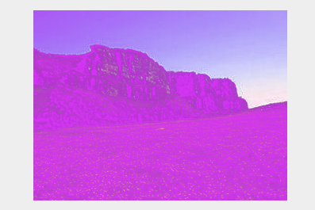

Xfermode
Xfermode具体怎么翻译，说实话，我也不知道，我习惯叫它图片混合模式，随便了，管它叫什么，不妨碍我们使用它。关于Xfermode的说明，可以在Google文档中找到这样的描述：Xfermode是在绘图通道中自定义“传输模式”的基类。静态函数创建可以调用或者返回任意作为模式枚举指定的预定义子类实例。当Xfermode分配给Paint，然后绘制对象与Paint就具备了所添加的xfermode。读起来比较拗口，下面直接看Xfermode的源码：
public class Xfermode {
protected void finalize() throws Throwable {
try {
finalizer(native_instance);
} finally {
super.finalize();
}
}
private static native void finalizer(long native_instance);
long native_instance;
}
看，Xfermode就这么点代码，经验告诉我们，其下必有子类，擦，变元芳了~~~

查看一下文档发现Xfermode确实有AvoidXfermode、PixelXorXfermode、PorterDuffXfermode，下面来继续学习一下3个子类的用法。
AvoidXfermode
看这个子类之前告诉大家一个不幸的消息，AvoidXfermode不支持硬件加速，在高于API16的机器上不会适用，如果想测试这个子类。
- 1，可以关闭手机的硬件加速模块；
- 2，在AndroidManifest.xml中Application节点上设置硬件加速为false。
android:hardwareAccelerated="false"
在Android Studio下点击查看一下AvoidXfermode的构造方法：
public AvoidXfermode(int opColor, int tolerance, Mode mode)
AvoidXfermode的构造方法也特别简单，一共接收3个参数：第一个参数opColor是一个16进制的带透明度通道的颜色值，如0X12345678。第二个参数tolerance表示容差值，什么是容差值呢？可以理解成一个表示“精确”和“模糊”的概念，下面会解释一下。第三个参数是AvoidXfermode的模式，AvoidXfermode的模式一共有两种：AvoidXfermode.Mode.TARGET和AvoidXfermode.Mode.AVOID。
AvoidXfermode.Mode.TARGET
在该模式下Android会判断画布上的颜色是否会有跟opColor不一样的颜色，比如我opColor是红色，那么在TARGET模式下就会去判断我们的画布上是否有存在红色的地方，如果有，则把该区域“染”上一层我们画笔定义的颜色，否则不“染”色，而tolerance容差值则表示画布上的像素和我们定义的红色之间的差别该是多少的时候才去“染”的，比如当前画布有一个像素的色值是(200, 20, 13)，而我们的红色值为(255, 0, 0)，当tolerance容差值为255时，即便(200, 20, 13)并不等于红色值也会被“染”色，容差值越大“染”色范围越广反之则反，空说无凭我们来看看具体的实现和效果：
public class CustomView3 extends View {
private Paint mPaint;
private Bitmap mBitmap;
private Context mContext;
private int x, y, w, h;
private AvoidXfermode avoidXfermode;
public CustomView3(Context context) {
this(context, null);
}
public CustomView3(Context context, AttributeSet attrs) {
super(context, attrs);
mContext = context;
initRes();
initPaint();
}
private void initRes() {
//加载bitmap
mBitmap = BitmapFactory.decodeResource(mContext.getResources(), R.mipmap.image);
//获取bitmap的展示起始布局
x = ScreenUtil.getScreenW(mContext) / 2 - mBitmap.getWidth() / 2;
y = ScreenUtil.getScreenH(mContext) / 2 - mBitmap.getHeight() / 2;
w = ScreenUtil.getScreenW(mContext) / 2 + mBitmap.getWidth() / 2;
h = ScreenUtil.getScreenH(mContext) / 2 + mBitmap.getHeight() / 2;
}
private void initPaint() {
mPaint = new Paint(Paint.ANTI_ALIAS_FLAG);
avoidXfermode = new AvoidXfermode(0XFFFFFFFF, 0, AvoidXfermode.Mode.TARGET);
}
@Override
protected void onDraw(Canvas canvas) {
canvas.drawBitmap(mBitmap, x, y, mPaint);
mPaint.setARGB(255, 211, 53, 243);
mPaint.setXfermode(avoidXfermode);
canvas.drawRect(x, y, w, h, mPaint);
}
}
下面来运行看效果，首先确定一下开启的模拟器是API16以下的，或者Application节点下设置了关闭“硬件加速”：

AvoidXfermode(0XFFFFFFFF, 0, AvoidXfermode.Mode.TARGET)：
大家可以看到，在我们的模式为TARGET容差值为0的时候此时只有当图片中像色颜色值为0XFFFFFFFF的地方才会被染色，而其他地方不会有改变
下面我们来修改一下容差值，将容差值改成255：

AvoidXfermode(0XFFFFFFFF, 255, AvoidXfermode.Mode.TARGET)
而当容差值为255的时候只要是跟0XFFFFFFFF有点接近的地方都会被染色
AvoidXfermode.Mode.AVOID
则与TARGET恰恰相反，TARGET是我们指定的颜色是否与画布的颜色一样，而AVOID是我们指定的颜色是否与画布不一样，其他的都与TARGET类似AvoidXfermode(0XFFFFFFFF, 0, AvoidXfermode.Mode.AVOID)：
当模式为AVOID容差值为0时，只有当图片中像素颜色值与0XFFFFFFFF完全不一样的地方才会被染色AvoidXfermode(0XFFFFFFFF, 255, AvoidXfermode.Mode.AVOID)：

当容差值为255时，只要与0XFFFFFFFF稍微有点不一样的地方就会被染色
那么这玩意究竟有什么用呢？比如说当我们只想在白色的区域画点东西或者想把白色区域的地方替换为另一张图片的时候就可以采取这种方式！
PixelXorXfermode
PixelXorXfermode是Xfermode下的另外一种图像混排模式，该类特别简单，不过呢，也很不幸的，在API16中已经过时了。我们来做一个简单的了解，先看PixelXorXfermode的构造方法：
public PixelXorXfermode(int opColor)
构造方法很简单，只要传递一个16进制带透明通道的颜色值即可，那么这个参数有什么用呢？我在Google文档中，找到了这样的一个算法：实际上PixelXorXfermode内部是按照“opColor ^ src ^ dst”这个异或算法运算的，得到一个不透明的(alpha = 255)的色彩值，设置到图像中，下面我们接着上面用到的图片Demo写个PixelXorXfermode的Demo：
public class CustomView3 extends View {
private Paint mPaint;
private Bitmap mBitmap;
private Context mContext;
private int x, y, w, h;
private PixelXorXfermode pixelXorXfermode;
public CustomView3(Context context) {
this(context, null);
}
public CustomView3(Context context, AttributeSet attrs) {
super(context, attrs);
mContext = context;
initRes();
initPaint();
}
private void initRes() {
//加载bitmap
mBitmap = BitmapFactory.decodeResource(mContext.getResources(), R.mipmap.image);
//获取bitmap的展示起始布局
x = ScreenUtil.getScreenW(mContext) / 2 - mBitmap.getWidth() / 2;
y = ScreenUtil.getScreenH(mContext) / 2 - mBitmap.getHeight() / 2;
w = ScreenUtil.getScreenW(mContext) / 2 + mBitmap.getWidth() / 2;
h = ScreenUtil.getScreenH(mContext) / 2 + mBitmap.getHeight() / 2;
}
private void initPaint() {
mPaint = new Paint(Paint.ANTI_ALIAS_FLAG);
pixelXorXfermode = new PixelXorXfermode(0XFFFF0000);
}
@Override
protected void onDraw(Canvas canvas) {
//先绘制Bitmap，src
canvas.drawBitmap(mBitmap, x, y, mPaint);
//随便设置一个纯色测试
mPaint.setARGB(255, 211, 53, 243);
//设置Xfermode
mPaint.setXfermode(pixelXorXfermode);
//在bitmap上混排一个纯色的矩形（dst）
canvas.drawRect(x, y, w, h, mPaint);
}
}
混排后的图像是：

PixelXorXfermode在底层已经取出src，dst每个像素点与opColor进行了opColor ^ src ^ dst运算了，结果输出就是上图所示的那样！好了，我只学这么多了，因为它已经过时了，同样上面的AvoidXfermode也是，过时了，了解即可。下面是对Xfermode的第三个子类，也是唯一一个还没有过时的，非常重要的子类PorterDuffXfermode的学习。
PorterDuffXfermode
同样PorterDuffXfermode也是Xfermode的子类，我们先看看它的构造方法：public PorterDuffXfermode(PorterDuff.Mode mode)
PorterDuffXfermode的构造方法很简单，构造方法中需要传递一个PorterDuff.Mode参数，关于PorterDuff.Mode，我们在上篇博客中已经学习完了，其实跟ColorFilter的子类PorterDuffColorFilter的混排模式是一样的。Android系统一共提供了18种混排模式，在模拟器的ApiDemos/Graphics/XferModes，有张效果图：
这张图可以很形象的说明图片各种混排模式下的效果。其中Src代表原图，Dst代表目标图，两张图片使用不同的混排方式后，得到的图像是如上图所示的。 PorterDuff.Mode也提供了18种混排模式已经算法，其中比上图多了ADD和OVERLAY两种模式：

Source alpha表示源图的Alpha通道；Sc全称为Source color表示源图的颜色；Da全称为Destination alpha表示目标图的Alpha通道；Dc全称为Destination color表示目标图的颜色，[...,..]前半部分计算的是结果图像的Alpha通道值，“,”后半部分计算的是结果图像的颜色值。图像混排后是依靠这两个值来重新计算ARGB值的，具体计算算法，抱歉，我也不知道，不过不要紧，不了解计算算法也不影响我们程序员写程序的。我们只要对照上面的apiDemo中提供的图片就能推测出混排后的结果的，下面将会对照ApiDemos/Graphics/XferModes的程序进行修改，来测试各个模块的效果，测试程序如下：
public class XfermodeView extends View {
//PorterDuff模式常量 可以在此更改不同的模式测试
private static final PorterDuff.Mode MODE = PorterDuff.Mode.CLEAR;
private PorterDuffXfermode porterDuffXfermode;
private int screenW, screenH; //屏幕宽高
private Bitmap srcBitmap, dstBitmap;
//源图和目标图宽高
private int width = 120;
private int height = 120;
public XfermodeView(Context context) {
this(context, null);
}
public XfermodeView(Context context, AttributeSet attrs) {
super(context, attrs);
screenW = ScreenUtil.getScreenW((Activity) context);
screenH = ScreenUtil.getScreenH((Activity) context);
//创建一个PorterDuffXfermode对象
porterDuffXfermode = new PorterDuffXfermode(MODE);
//创建原图和目标图
srcBitmap = makeSrc(width, height);
dstBitmap = makeDst(width, height);
}
//创建一个圆形bitmap，作为dst图
private Bitmap makeDst(int w, int h) {
Bitmap bm = Bitmap.createBitmap(w, h, Bitmap.Config.ARGB_8888);
Canvas c = new Canvas(bm);
Paint p = new Paint(Paint.ANTI_ALIAS_FLAG);
p.setColor(0xFFFFCC44);
c.drawOval(new RectF(0, 0, w 3 / 4, h 3 / 4), p);
return bm;
}
// 创建一个矩形bitmap，作为src图
private Bitmap makeSrc(int w, int h) {
Bitmap bm = Bitmap.createBitmap(w, h, Bitmap.Config.ARGB_8888);
Canvas c = new Canvas(bm);
Paint p = new Paint(Paint.ANTI_ALIAS_FLAG);
p.setColor(0xFF66AAFF);
c.drawRect(w / 3, h / 3, w 19 / 20, h 19 / 20, p);
return bm;
}
@Override
protected void onDraw(Canvas canvas) {
Paint paint = new Paint();
paint.setFilterBitmap(false);
paint.setStyle(Paint.Style.FILL);
//绘制“src”蓝色矩形原图
canvas.drawBitmap(srcBitmap, screenW / 8 - width / 4, screenH / 12 - height / 4, paint);
//绘制“dst”黄色圆形原图
canvas.drawBitmap(dstBitmap, screenW / 2, screenH / 12, paint);
//创建一个图层，在图层上演示图形混合后的效果
int sc = canvas.saveLayer(0, 0, screenW, screenH, null, Canvas.MATRIX_SAVE_FLAG |
Canvas.CLIP_SAVE_FLAG |
Canvas.HAS_ALPHA_LAYER_SAVE_FLAG |
Canvas.FULL_COLOR_LAYER_SAVE_FLAG |
Canvas.CLIP_TO_LAYER_SAVE_FLAG);
//先绘制“dst”黄色圆形
canvas.drawBitmap(dstBitmap, screenW / 4, screenH / 3, paint);
//设置Paint的Xfermode
paint.setXfermode(porterDuffXfermode);
canvas.drawBitmap(srcBitmap, screenW / 4, screenH / 3, paint);
paint.setXfermode(null);
// 还原画布
canvas.restoreToCount(sc);
}
}
为了方便观察，需要将Activity_main.xml的背景色设置为黑色。
1.PorterDuff.Mode.CLEAR。中文描述：所绘制源图像不会提交到画布上。
private static final PorterDuff.Mode MODE = PorterDuff.Mode.CLEAR;

2.PorterDuff.Mode.SRC。中文描述：只显示源图像。
private static final PorterDuff.Mode MODE = PorterDuff.Mode.SRC;

3.PorterDuff.Mode.DST。中文描述：只显示目标图像。
private static final PorterDuff.Mode MODE = PorterDuff.Mode.DST;
4.PorterDuff.Mode.SRC_OVER。中文描述：正常绘制显示，源图像居上显示。
private static final PorterDuff.Mode MODE = PorterDuff.Mode.SRC_OVER;

5.PorterDuff.Mode.DST_OVER。中文描述： 上下层都显示。目标图像居上显示。
private static final PorterDuff.Mode MODE = PorterDuff.Mode.DST_OVER;

6.PorterDuff.Mode.SRC_IN。中文描述： 取两层绘制交集中的源图像。
private static final PorterDuff.Mode MODE = PorterDuff.Mode.SRC_IN;

7.PorterDuff.Mode.DST_IN。中文描述：取两层绘制交集中的目标图像。
private static final PorterDuff.Mode MODE = PorterDuff.Mode.DST_IN;

8.PorterDuff.Mode.SRC_OUT。中文描述：只在源图像和目标图像不相交的地方绘制源图像。
private static final PorterDuff.Mode MODE = PorterDuff.Mode.SRC_OUT;
9.PorterDuff.Mode.DST_OUT。中文描述：只在源图像和目标图像不相交的地方绘制目标图像。
private static final PorterDuff.Mode MODE = PorterDuff.Mode.DST_OUT;
10.PorterDuff.Mode.SRC_ATOP。中文描述：在源图像和目标图像相交的地方绘制源图像，在不相交的地方绘制目标图像。
private static final PorterDuff.Mode MODE = PorterDuff.Mode.SRC_ATOP;

11.PorterDuff.Mode.DST_ATOP。中文描述：在源图像和目标图像相交的地方绘制目标图像而在不相交的地方绘制源图像。
private static final PorterDuff.Mode MODE = PorterDuff.Mode.DST_ATOP;

12.PorterDuff.Mode.XOR。中文描述：异或：去除两图层交集部分
private static final PorterDuff.Mode MODE = PorterDuff.Mode.XOR;
13.PorterDuff.Mode.DARKEN。中文描述：取两图层全部区域，交集部分颜色加深
private static final PorterDuff.Mode MODE = PorterDuff.Mode.DARKEN;
14.PorterDuff.Mode.LIGHTEN。中文描述：取两图层全部，点亮交集部分颜色
private static final PorterDuff.Mode MODE = PorterDuff.Mode.LIGHTEN;

15.PorterDuff.Mode.MULTIPLY。中文描述：取两图层交集部分叠加后颜色
private static final PorterDuff.Mode MODE = PorterDuff.Mode.MULTIPLY;

16.PorterDuff.Mode.SCREEN。中文描述：滤色。
private static final PorterDuff.Mode MODE = PorterDuff.Mode.SCREEN;

以下是android中新加的两种模式：
17.ADD。中文描述：饱和度相加。
private static final PorterDuff.Mode MODE = PorterDuff.Mode.ADD;

18.OVERLAY。中文描述：叠加
private static final PorterDuff.Mode MODE = PorterDuff.Mode.OVERLAY;